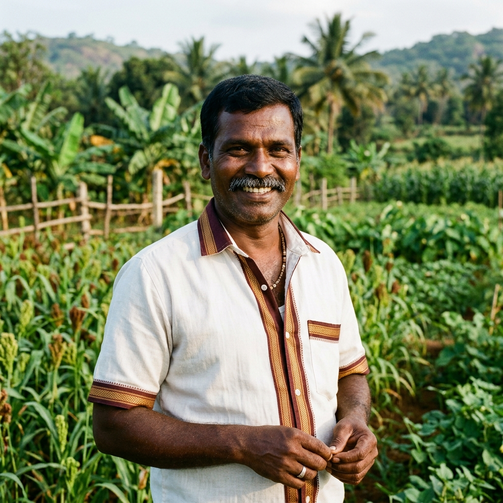

How do you find customers outside your district?
We produce organic turmeric and other spices. Currently most of our sales are local. I would like to know how other rural entrepreneurs have reached customers in different states. Any advice or experiences would be really helpful!
Question
AS